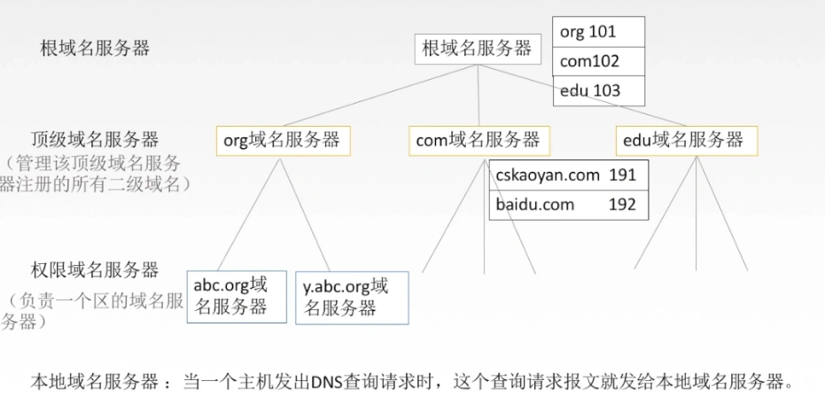
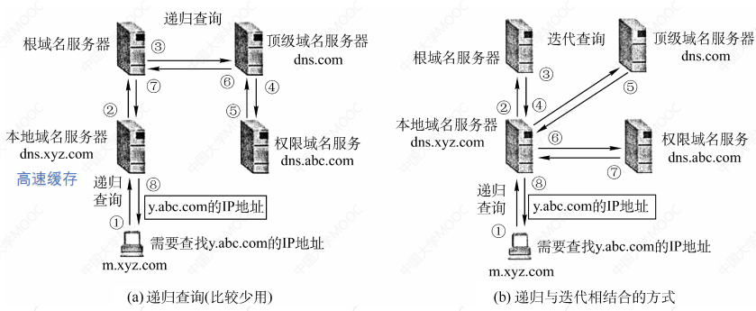
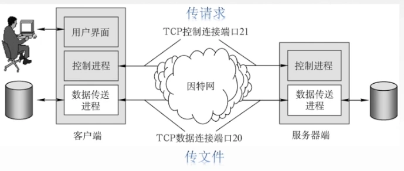
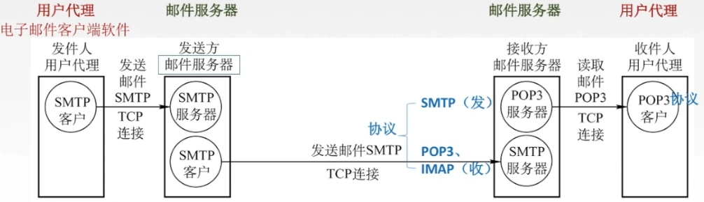
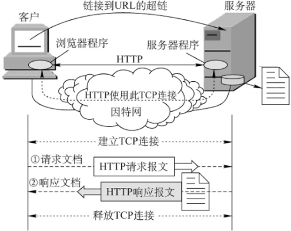

1.概述
应用层对应用程序的通信提供服务
功能：文件传输、访问和管理；电子邮件；虚拟终端；查询服务和远程作业登录
应用层的重要协议：FTP；SMTP、POP3；HTTP；DNS
网络应用模型：
- 客户/服务器模型（Client/Server）：Web；文件传输FTP；远程登陆；电子邮件
- P2P模型（Peer-to-peer）：
2.DNS系统
因特网采用层次树状结构的命名方法。采用这种命名方法，任何一个连接到因特网的主机或路由器，都有一个唯一的层次结构名称，即域名(Domain Name)。

域名解析过程
当客户端需要域名解析时，通过本机的DNS客户端构造一个DNS请求报文，以UDP数据报方式发往本地域名服务器。
域名解析有两种方式：递归查询和递归与迭代相结合的查询。

3.FTP协议
FTP是基于客户/服务器（C/S）的协议, 它使用TCP可靠的传输服务。一个FTP服务器进程可同时为多个客户进程提供服务。
用户通过一个客户机程序连接至在远处计算机上运行的服务器程序。
依照FTP协议提供服务，进行文件传送的计算机就是FTP服务器。
连接FTP服务器，遵循FTP协议与服务器传送文件的电脑就是FTP客户端。
工作原理：
- 客户端和服务器端先建立TCP连接，端口是21，称为控制连接；
- 然后看情况是主动建立连接还是被动建立连接；
- 主动建立连接是指服务器端主动发送请求和客户端进行连接，此时端口号固定是20；
- 被动连接是指客户端发送请求和服务器端建立数据传送连接，此时端口号是不确定，有两者协商得到
- 数据传输完成之后，数据连接断开，控制连接继续保持，直至两边发送断开请求

4.电子邮件
电子邮件是一种异步通信方式，通信时不需要双方同时在场。
电子邮件把邮件发送到收件人使用的邮件服务器，并放在其中的收件人邮箱中，收件人可以随时上网到自己使用的邮件服务器进行读取。

- 用户代理：电子邮件客户端软件，功能：撰写、显示、处理和通信
- 邮件服务器：功能：发送&接收邮件、向发件人报告邮件传送结果
- 协议: 邮件发送协议 (SMTP) 和读取协议 (POP3)
SMTP通信的三个阶段的过程
- 连接建立：连接是在发送主机的 SMTP 客户和接收主机的 SMTP 服务器之间建立的。SMTP 不使用中间的邮件服务器。
- 邮件传送。
- 连接释放：邮件发送完毕后，SMTP 应释放 TCP 连接
5.万维网
万维网WWW（World Wide Web）是一个大规模的、联机式的信息存储所/资料空间，是无数个网络站点和网页的集合。
万维网的组成
万维网的内核部分是由三个标准构成的:
- 统一资源定位符(URL)。 负责标识万维网上的各种文档，并使每个文档在整个万维网的范围内具有唯一的标识符URL。
- 超文本传输协议(HTTP)。 一个应用层协议，它使用TCP连接进行可靠的传输，HTTP是万维网客户程序和服务器程序之间交互所必须严格遵守的协议。
- 超文本标记语言(HTML)。 一种文档结构的标记语言，它使用一些约定的标记对页面上的各种信息(包括文字、声音、图像、视频等)、格式进行描述。
统一资源定位符URL
统一资源定位符URL（唯一标识） → 资源（文字、视频、音频……）
URL的一般形式：
<协议>://<主机>:<端口>/<路径>- 协议：http、ftp
- 主机：域名、IP地址
URL不区分大小写
用户通过点击超链接获取资源，这些资源通过超文本传输协议（HTTP）传送给使用者。
万维网以客户/服务器方式工作，用户使用的浏览器就是万维网客户程序，万维网文档所驻留的主机运行服务器程序
HTTP

（1）用户浏览页面方法：
- 输入URL
- 点击超链接
（2）服务器
一个服务器进程监听TCP的端口80
（3）具体过程
- 浏览器分析URL
- 浏览器向DNS请求解析IP地址
- DNS解析出IP地址，
- 浏览器与服务器建立TCP连接
- 浏览器发出取文件命令
- 服务器响应
- 释放TCP连接
- 浏览器显示：浏览器可以只下载文本部分